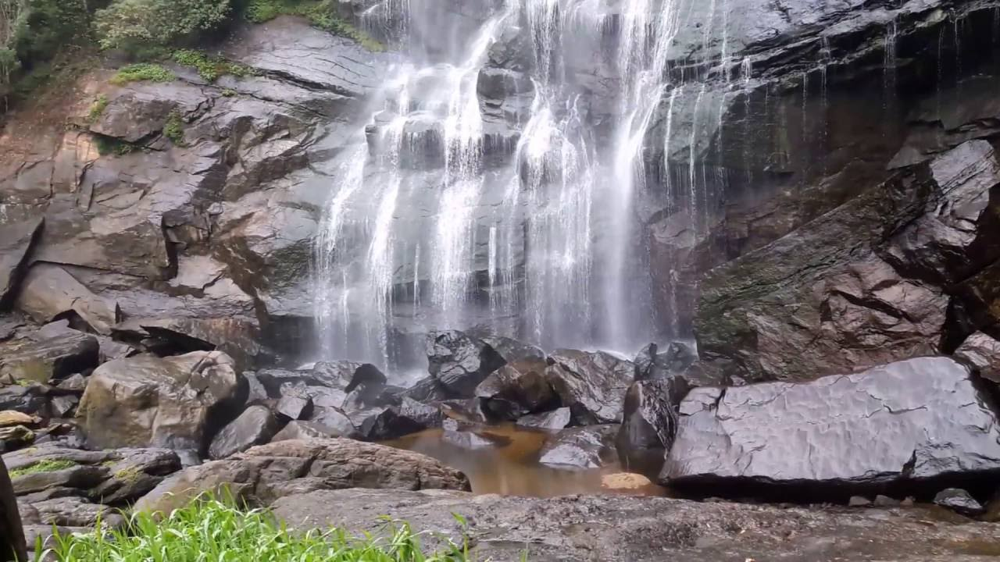
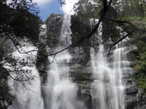

|  | |
|  |
The beautiful Bomburu Ella Falls (also known as Perawella Falls) s a collection of about 10 little-known jungle waterfalls, situated between 1500 and 2000m above sea level in the Sita Eliya Kandapola Forest Reserve. They are served by the upper segment of the principal tributary of the Uma River, known as the Duulgala River. |